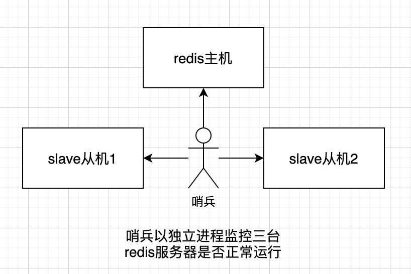

Redis 入门笔记
Nosql 概述
单机 MySQL 年代
在早年的互联网时代，一个网站的访问量不会太大，使用单个数据库完全足够。随着用户量增大，数据增大，整个网站出现瓶颈。
- 数据量太大，一个服务器放不下
- 数据的索引，一个服务器放不下
- 访问量太大，一个服务器承受不了
缓存、读写分离
网站大多数情况下都是在读，每次都去查询数据库十分消耗性能，为了减轻服务器的压力，应该使用缓存来保证效率。
发展过程：优化数据结构和索引、文件缓存，Memcached
分库分表、水平拆分、MySQL 集群
早年发展历程：
- 早年 MyISAM：表锁，十分影响效率
- Innodb：行锁
- MySQL 表分区
- MySQL 集群
如今互联网产品的用户数量、用户信息、社交网络等等爆发式增长，迫切需要新的技术来支撑如今的互联网产品。
3V + 3高
| 3V | 3高 |
|---|---|
| 海量 Volume | 高并发 |
| 多样 Variety | 高可扩 |
| 实时 Velocity | 高性能 |
什么是 NoSQL
NoSQL = Not only SQL
泛指非关系型数据库。NoSQL 存储数据不再是像 MySQL 等关系型数据库一样，需要固定的格式。NoSQL 在当前大数据环境下发展十分迅速，其中 Redis 发展最快。
特点
- 数据之间没有关系，方便扩展
- 大数据量，高性能
- 数据类型多样
对比传统的 RDBMS：
| Nosql | RDBMS |
|---|---|
| 没有固定的查询语言 | SQL |
| 键值对存储、列存储、文档存储 | 结构化组织 |
| 可性能，高可用，高可扩 | 基础的事务 |
| 不仅仅是数据 | 数据和关系都单独存在表中 |
Redis 入门
Redis（Remote Dictionary Server），远程字典服务。使用 C 语言编写、单线程、开源、支持网络、基于内存亦可持久化的日志型、KV 数据库，提供多种编程语言的 API。
redis 会周期性地把更新的数据写入磁盘，或者把修改操作写入追加的记录文件，并且在此基础上实现主从（master-slave）同步。
Linux 下安装
-
官网下载最新版的 redis 压缩包，解压到
/opt目录。 -
进入解压后的文件夹，执行命令：
# 安装 gcc 最新版 yum install gcc-c++ # 查看当前版本 gcc -v # 4.8.5 yum -y install centos-release-scl yum -y install devtoolset-9-gcc devtoolset-9-gcc-c++ devtoolset-9-binutils scl enable devtoolset-9 bash gcc -v # 9.3.1 make make install -
redis 默认安装路径：
/usr/local/bin -
在
/usr/local/bin下，创建一个文件夹jconfig用来存放 redis 的配置文件。 -
把
/opt下的 redis 安装目录里面的redis.conf文件复制过来。 -
打开配置文件，设置后台启动：修改
daemonize yes。
启动和连接
启动
redis-server jconfig/redis.conf
连接
redis-cli -p 6379
查看进程
ps -ef|grep redis
基础知识
默认有 16 个数据库，默认使用第 0 个：
databases 16
切换数据库：
select 3
查看数据库大小：
dbsize
查看数据库中所有的 key：
keys *
注意： redis 数据量越大，keys 命令执行速度越慢。keys 还会阻塞单线程的 redis 服务器。生产环境中使用scan来代替keys。
# 默认返回 10 条 key
scan 0
# 返回指定数量的 key
scan 0 count 100
# 匹配查询 key
scan 0 match CMD* count 100
清空当前数据库：
flushdb
清空全部数据库：
flushall
# 判断当前的 key 是否存在
EXISTS name
# 移除当前的 key
move name 1
# 设置 key 的过期时间，单位是秒
EXPIRE name 10
# 查看剩余时间
ttl name
# 查看当前 key 类型
type name
redis 五大基本数据类型
string
使用场景：
- 计数器
- 统计多单位的数量
- 浏览数、粉丝数等等
值是字符串的情况
# 设值
set k1 v1
# 获取
get k1
# 追加（如果 key 不存在，相当于 set）
append k1
# 字符串长度
strlen k1
字符串范围
# 截取字符串 k1[0:3]
getrange k1 0 3
# 获取全部字符串
getrange k1 0 -1
# 从字符串的位置 1 开始替换字符串
setrange k1 1 xx
过期
# 30 秒后过期
setex k1 30 xxx
# 如果 k1 不存在，则创建
setnx k1 xx
# msetnx 是一个原子性操作，要么一起成功，要么一起失败
msetnx k1 v1 k2 v2
同时设置多个
mset k1 v1 k2 v2 ...
同时获取多个
mget k1 k2 k3 ...
先 get 再 set
# 如果 db 原本不存在，则返回值为 nil
# 如果 db 原本存在，则返回 db 旧值，再设置新值
getset db redis
值是数字的情况
set views 0
# 自增 1
incr views
# 自减 1
decr views
# +10
incrby views 10
# -10
decrby views 10
list
可以用 list 来实现栈、队列、消息队列，阻塞队列。可以把 list 看做一个横向排列的数组，可以从左右操作里面的元素。
增加元素：
# 从左边加入元素
lpush list a
# 从右边加入元素
rpush list b
# 以下标设置值
lset list 0 item
# 在 <vlaue> 的前面或者后面，插入 <newValue>
linsert list before/after <vlaue> <newValue>
移除元素：
# 移除左边的元素
lpop list
# 移除右边的元素
rpop list
# 移除指定的元素
lrem list <数量> xxx
# 从 list 中移除最后一个元素，并加入 otherlist
rpoplpush list otherlist
其他操作：
# 判断列表是否存在
exists list
# 获取 list 全部值
lrange list 0 -1
# 通过下标取值
lindex list 1
# 获取 list 长度
llen list
# 截取元素
ltrim list [start:end]
set
set 集合中的值不能重复。
设置元素：
sadd myset a
移除元素：
# 移除指定元素
srem myset a
# 随机移除一个元素
spop myset
# 从 myset 中移除 a 到 myset2
smove myset myset2 a
其他操作：
# 查看集合中所有的值
smembers myset
# 判断一个值在不在集合中
sismember myset a
# 获取集合中元素的个数
scard myset
# 随机抽取指定个数的元素
srandmember myset <个数>
交并差：
# 差集
sdiff myset1 myset2
# 交集
sinter myset1 myset2
# 并集
sunion myset1 myset2
hash
hash 适合对象的存储，尤其是用户信息之类的，可能会经常变更的数据。
单个 key-value：
# 设置
hset hs k1 v1
# 获取
hget hs k1
多个 key-value：
# 同时设置多个 k-v
hmset hs k1 v1 k2 v2
# 获取指定的 key
hmget hs k1
# 获取所有的 k-v
hgetall hs
删除：
# 删除指定的 key
hdel hs k1
其他操作：
# 获取 key 数量
hlen hs
# 判断指定 key 是否存在
hexists hs k1
# 获取所有 key
hkeys hs
# 获取所有 value
hvals hs
# 如果 k1 不存在，才设值
hsetnx hs k1 v1
# 设置增量：k1 + 1
hincrby hs k1 1
zset
zset 为有序集合，在 set 的基础上，增加了一个值。排行榜、成绩、工资排序，消息带权重等判断。
# 设置一个值
zadd myset 1 one
# 设置多个值
zadd money 500 zhangsan 200 lisi 900 wangwu
# 从小到大列出所有元素
zrange money 0 -1
ZRANGEBYSCORE money -inf +inf
# 从小到大列出所有元素，并附带值
ZRANGEBYSCORE money -inf +inf withscores
# 移除指定元素
zrem money zhangsan
# 获取值在此区间范围的元素个数
zcount money 100 600
redis 三种特殊数据类型
Geopatial 地理位置
实现定位、附近的人，打车距离计算等需求。
# 添加一个位置
geoadd china:city 116.4 39.9 beijing
# 获取一个位置
getpos china:city beijing
# 计算两地距离
geodist china:city beijing shanghai km
# 找出位于指定元素周围的其他元素
georadiusbymember china:city beijing 1000 km
# 以给定经纬度为圆心，找到半径内地点
georadius china:city 110 30 1000 km
georadius china:city 110 30 1000 km count <个数>
# withdist（距离），withcoord （经纬）
georadius china:city 110 30 1000 km withdist withcoord
# 返回 11 个字符的一维字符串，两个字符串约接近代表距离越近
geohash china:city beijing chongqing
# 移除指定元素
zrem china:city beijing
# 查看所有元素
zrange china:city 0 -1
hyperloglog
不重复的数。使用场景：
- 投票
- 网站访问数量
# 创建一组元素
pfadd mykey a b c d a b
# 统计基数数量
pfcount mykey
# 合并两组元素到 mykey
pfmerge mykey mykey1 mykey2
如果可以容错，那可以使用 hyperloglog。如果不允许容错，就使用 set 或者自己的数据类型来实现。
bitmap
统计活跃度，打卡等。
# 一周的打卡
setbit sign 0 1
setbit sign 1 0
setbit sign 2 1
setbit sign 3 0
setbit sign 4 1
setbit sign 5 1
setbit sign 6 0
# 查看某天是否打卡
getbit sign 3
# 统计打卡次数
bitcount sign
事务
redis 事务本质：一组命令的集合。redis 单条命令是原子性的，但是事务不能保证原子性。
一次性、顺序性、排他性。
# 开启事务
multi
# 其他命令
...
# 执行事务
exec
# 取消事务
discard
- 编译型异常，代码有问题或者命令错误，事务中所有的命令都不会被执行。
- 运行时异常，如果事务中一条命令执行失败（如对字符串 incr），其他命令可以正常执行。
锁
- 悲观锁：认为什么时候都会出问题，无论做什么都加锁
- 乐观锁：认为不会出什么问题。更新数据的时候再判断在此期间是否有人修改过数据。获取 version，更新的时候比较 version。
# 取消监视
unwatch money
# 监视
watch money
multi
decrby money 10
# 执行之前，如果另外一个线程修改了 money 的值，这个时候就会导致事务执行失败
exec
redis 配置文件
网络
# 绑定的ip
bind 127.0.0.1
# 保护模式
protected-mode yes
# 端口设置
port 6379
通用
# 守护进程，这个需要手动开启
daemonize yes
# 如果以后台的方式运行，我们就需要指定一个 pid 文件!
pidfile /var/run/redis_6379.pid
# 日志级别
loglevel notice
# 日志的文件位置名
logfile ""
# 数据库数量
databases
# 启动 logo
always-show-logo yes
快照
快照，也就是备份。就像单机游戏里面的存档，可以恢复到存档时的状态。
# 如果 900s 内，如果至少有一个 1 key 进行了修改，redis 进行持久化操作
save 900 1
# 如果 300s 内，如果至少 10 key 进行了修改，redis 进行持久化操作
save 300 10
# 如果 60s 内，如果至少 10000 key 进行了修改，redis 进行持久化操作
save 60 10000
# 持久化如果出错，是否还需要继续工作
stop-writes-on-bgsave-error yes
# 是否压缩 rdb 文件，需要消耗一些cpu资源
rdbcompression yes
# 保存rdb文件的时候，进行错误的检查校验
rdbchecksum yes
# rdb 文件保存的目录
dir ./
安全
# 获取密码
config get requirepass
# 设置密码
config set requirepass "123456"
# 鉴权
auth 123456
client
# 最大客户端连接数
maxclients 100
# 配置最大的内存容量
maxmemory <bytes>
# 内存到达上限之后的处理策略
maxmemory-policy noeviction
1、volatile-lru:只对设置了过期时间的key进行LRU(默认值)
2、allkeys-lru : 删除lru算法的key
3、volatile-random:随机删除即将过期key
4、allkeys-random:随机删除
5、volatile-ttl : 删除即将过期的
6、noeviction : 永不过期，返回错误
AOF（append only）
# 默认不开启 aof 模式
appendonly
# 持久化文件名字
appendfilename "appendonly.aof"
# 每次修改都同步
appendfsync always
# 每秒同步一次
appendfsync everysec
# 不执行同步
appendfsync no
redis 持久化
redis 是内存数据库，如果不将内存中的数据库状态保存到磁盘，一旦服务器进程退出，服务器中的数据库状态将会消失，所以定期需要将数据持久化。
RDB（Redis DataBase）
在指定的时间间隔内，将内存中的数据集快照写入磁盘，恢复时将快照文件直接读到内存里。redis 默认就是以 rdb 方式进行持久化，rdb 快照文件叫做dump.rdb，可以在配置中进行修改：
dbfilename dump.rdb
# 触发持久化条件
save <秒> <操作次数>
触发机制：
- save 规则满足的情况下
- 执行 flushall
- 退出 redis
备份 redis 时，只需要将这个文件，放到 redis 启动目录即可，redis 启动时会自动检查 dump.rdb 并恢复其中的数据。
# 查看 redis 目录
127.0.0.1:6379> config get dir
1) "dir"
2) "/usr/local/bin" # 如果在这个目录下存在 dump.rdb 文件，启动就会自动恢复其中的数据
AOF（Append Only File）
aof 将所有的写的命令都记录下来，恢复的时候就把这个文件全部执行一遍。以日志的形势记录每个操作，只允许追加但不可以改写文件，redis 启动之初会读取该文件重新构建数据。
aof 文件如果中途别恶意修改，redis 会启动不成功，这个时候需要修复 aof 文件。
redis-check-aof --fix appendonly.aof
aof 默认是文件的无限追加，文件会越来越大。修复速度也比 rdb 慢。
Redis 发布订阅
redis 发布订阅（pub/sub）是一种消息通信模式：发送者（pub）发送消息，订阅者（sub）接收消息。redis 客户端可以订阅任意数量的频道。
应用场景：网络聊天室、实时广播、实时提醒、订阅关注系统等。
订阅端：
# 订阅
SUBSCRIBE cctv
发送端：
publish cctv "hello"
Redis 主从复制
概念
主从复制，是将一台 redis 服务器的数据，复制到其他 redis 服务器。前者称为主节点（master），后者称为从节点（slave）。数据的复制是单向的，智能由主节点到从节点。master 以写为主，slave 以读为主。
默认情况下启动 redis 服务，每台 redis 都是主节点。一个主节点可以有多个从节点，一个从节点只能有一个主节点。
主从复制主要包括：
- 数据冗余：主从复制实现了数据热备份，是持久化之外的一种冗余方式。
- 故障恢复：当主从节点出现问题时，可以由从节点提供服务，实现快速的故障恢复，实际上是一种服务冗余。
- 负载均衡：在主从复制的基础上，配合读写分离，可以由主节点提供写服务，由从节点提供读服务（写数据时连接主节点，读数据时连接从节点）。分担服务器负载，尤其是在写少读多的场景下，通过多个从节点分担读负载，可以大大提高 redis 服务器并发量。
- 高可用集群：除了上述作用以外，主从复制还是哨兵和集群能够实施的基础，因此说主从复制是 redis 高可用的基础。
单台 redis 服务器弊端：
- 从结构上，单个 redis 服务器可能会发生单点故障。单个服务器要处理所有的请求负载，压力较大。
- 从容量上，单个 redis 服务器内存容量有限。
环境配置
查看环境：
# 查看当前 redis 的主从信息
127.0.0.1:6379> info replication
# 角色 master
role:master
# 没有从机
connected_slaves:0
一般来说，主需要配置从机：
# 成为 6379 的从机
127.0.0.1:6380> SLAVEOF 127.0.0.1 6379
主机断开连接，从机依旧可以连接到主机。主机如果启动了，从机依旧可以直接获取到主机的信息。
复制原理
Slave 连接 Master 成功后会主动发送一个 sync 同步命令。
master 接到命令，启动后台的存盘进程，同时收集所有接收到的用于修改数据集命令。在后台进程执行完毕之后，master 将传送整个数据文件到 slave，完成一次完全同步。只要重新连接 master，一次全量复制将自动执行。
全量复制： slave 服务在接收到数据文件后，将其存盘并加载到内存中。
增量复制： master 继续将新的所有收集到的修改命令依次传给 slave，完成同步。
哨兵模式
如果主机断开了连接，可以使用slaveof no one让自己成为主机，其他节点需要手动连接到最新的节点，如果之前的主机恢复了，需要手动让其他从机再次连接到主机。
这样手动的方式费时费力，还会造成一段时间内服务不可用。可以使用哨兵（Sentinel）架构来解决这个问题。
后台监控主机是否故障，如果故障了会根据投票数自动将从机转换为主机。
哨兵是一个独立的进程，独立运行。哨兵通过发送命令，等待 redis 服务器响应，从而监控多个 redis 实例。

哨兵作用：
- 通过发送命令，让这三台 redis 服务器返回其监控运行状态。
- 当哨兵检测到 master 宕机，会自动将 slave 切换成 master，然后通过发布订阅模式通知其他服务器，修改配置文件，让他们切换主机。
一个哨兵进程监控，可能也会出现问题。为此，可以使用多个哨兵进行监控，各个哨兵之间互相监控，形成多哨兵模式。
主观下线： 假如主服务器宕机，哨兵A 先检测到这个情况，认为主服务器不可用，系统不会马上进行 failover 过程。
客观下线： 当后面的哨兵也检测到主服务器不可用，并且数量达到一定值，哨兵之间会进行投票。切换主机后，通过发布订阅模式，让各个哨兵把自己监控的从服务器切换主机。
启用哨兵
-
修改哨兵配置文件 sentinel.conf：
sentinel monitor myredis 127.0.0.1 6379 1 -
启动
redis-sentinel jconfig/sentinel.conf
Redis 缓存穿透
概念
某个请求需要查询一个数据，发现 redis 没有，也就是缓存没有命中，于是向持久层数据库查询，发现也没有，本次查询失败。当请求很多时，这会给持久层数据库造成很大压力。
布隆过滤器
布隆过滤器是一种数据结构，对所有可能查询的参数以 hash 形式存储，在控制层先进行校验，不符合则丢弃，从而减轻底层存储查询的压力。
当存储层不命中后，即时返回的空对象也将其缓存起来，同时设置一个过期时间，之后再访问这个数据，讲会从缓存中获取，保护了后端数据源。
弊端：
- 如果空值大量缓存起来，会造成空间浪费。
- 可能会出现缓存层和存储层数据不一致的情况，对需要保持一致性的业务会有影响。
缓存击穿
当某个 key 在过期的瞬间，由大量的请求访问，由于数据过期，会同时访问数据库来查询最新数据，并写回缓存，会导致数据库压力瞬间过大。
解决：
- 设置缓存不过期。
- 加互斥锁。分布式锁，保证对于每个 key，同时只有一个线程去查询后端服务，其他线程没有获得分布式锁的权限，因此只需要等待即可。这种方式将高并发的压力，转移到了分布式锁，因为对分布式的考验很大。
缓存雪崩
在某一个时间段，缓存集中过期失效，所有的访问查询都落到数据库上，会产生周期性的压力波峰。所有的请求都到达存储层，存储层调用暴增，造成存储层挂掉，缓存服务节点宕机。
解决：
- redis 高可用。多设几台 redis 服务器，搭建集群。
- 限流降级。在缓存失效后，通过加锁或者队列来控制读数据库写缓存的线程数量。
- 数据预热。正式部署前，先把可能的数据预先访问一遍，设置不同的过期时间，让缓存失效的时间点尽量均匀。
参考：https://www.bilibili.com/video/BV1S54y1R7SB